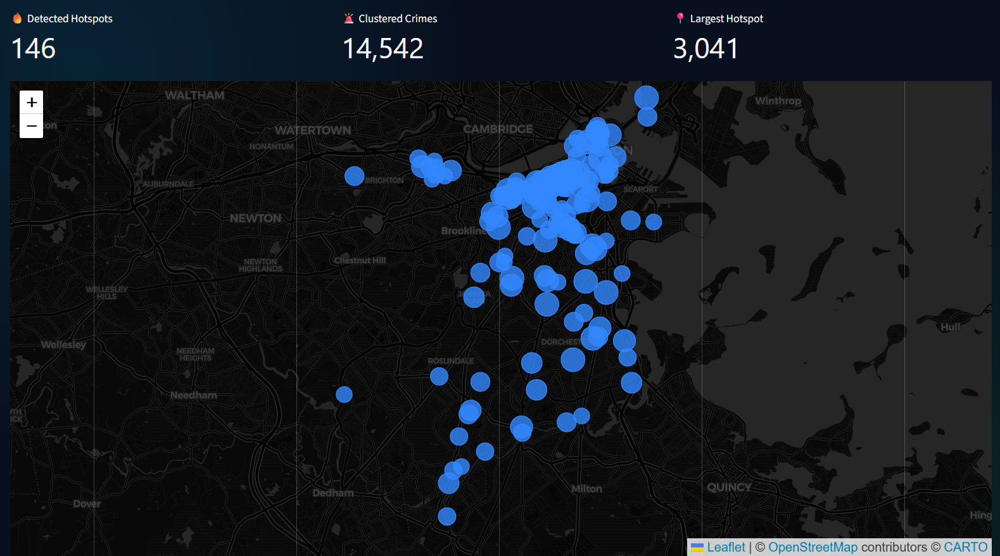
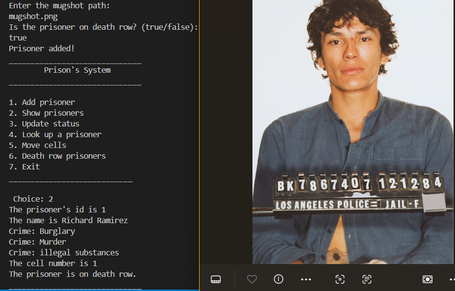
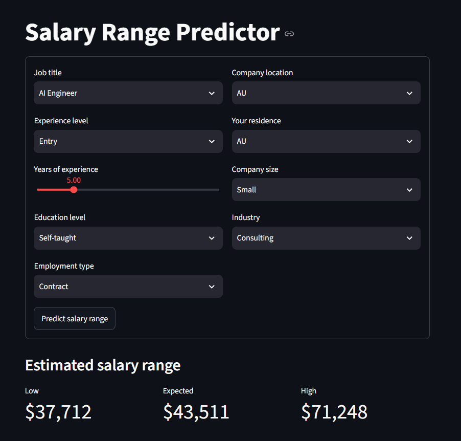

A computer science student at Cairo University who likes building things from the ground up — machine learning models and data analysis — and seeing them actually work.
I'm passionate about Data Science, Machine Learning, and AI. I’m especially interested in using data to uncover patterns, build predictive models, and solve real-world problems. I’m constantly learning and experimenting with new technologies while building projects that turn ideas into practical solutions. I like taking a dataset or a spec and turning it into something people can actually use. Outside coursework, I compete in programming contests and coordinate events and partnerships as part of my university's Developer Student Club.
I work primarily in Python and Java, with experience in machine learning, data analysis, and desktop application development. I also have a strong foundation in algorithms and data structures, which I apply in competitive programming.

A Machine Learning model trained on Boston's crime data using XGBoost, paired with DBSCAN that discovers micro-hotspots directly from raw crime coordinates with the nearest police stations.

A desktop records app for prisoners, cells, and staff, built on a clean MVC structure with JavaFX views.

Model comparison and tuning on a tech-salaries dataset, on its way to a small deployed app.